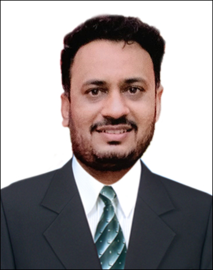

Deepak Patil

Summary
- Multi-faceted professional with nearly 12 years of experience in program and project management and operational service delivery in Corporate Banking, Financial Services, Treasury & Trade Solutions, Payment Solution, Healthcare IT & Life Sciences industry
- Led and managed transformation initiatives from strategic design to implementation that engaged executive management and diverse teams at all level in the development of roadmaps with the vision and strategy
- Formulated strategic transformation & digitalization plans and implemented target operating model leveraging new business enablement and streamlined operations
- Steered efforts in developing and implementing innovative programs that support the organization's strategic direction
- Gained a deep insight of client experience, identifying and filling product gaps; generating new ideas and improving client's experience by translating product strategy into detailed requirements
- Led strategic delivery projects and initiatives comprising re-engineering of business service processes, operations and enterprise applications; evolved delivery process and influenced operational issues across the organization
- Forward-focused Project & Program Manager with exposure to swiftly completing projects with competent cross-functional skills and ensuring on-time deliverables within pre-set cost parameters
- An ambassador of change with the merit of successful business process restructuring, implementation of business solutions in organizations through thought leadership and technical expertise
Education
- B.E (Computer Science & Engineering)
Work exprience
- Jun'23- Present with Deloitte Consulting
- Aug'21-Jun'23 with Accenture
- Mar'20-Aug'21 with Tata Motors Finance
- May'17-Mar'20 with Citi Bank
- Sep'15-Apr'17 with Uniphore
- Aug'10-Dec'14 with eClinicalworks